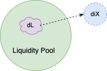
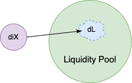

Indexing Problem
To download notebook to this tutorial, see here
[16]:
from uniswappy import *
user_nm = 'user_test'
eth_amount = 1000
dai_amount = 1000000
dai = ERC20("DAI", "0x111")
eth = ERC20("ETH", "0x09")
exchg_data = UniswapExchangeData(tkn0 = eth, tkn1 = dai, symbol="LP", address="0x011")
factory = UniswapFactory("ETH pool factory", "0x2")
lp = factory.deploy(exchg_data)
lp.add_liquidity(user_nm, eth_amount, dai_amount, eth_amount, dai_amount)
lp.summary()
Exchange ETH-DAI (LP)
Reserves: ETH = 1000.0, DAI = 1000000.0
Liquidity: 31622.776601683792
Problem Defined
We have some liquidity token (dL), and want to know home much x or y its worth
Let’s start with the Naive approach
\(x = \frac{L^2}{y}\)
\(\frac{dx}{dL} = \frac{2L}{y}\)
Substitute (\(y = \frac{L^2}{x}\)) into above
\(\frac{dx}{dL} = \frac{2x}{L}\)
Hence $:nbsphinx-math:`Delta `x $ approximates to:
\(\Delta x \sim \frac{2x \Delta L }{L}\)
Likewise \(\Delta L\) approximates to:
\(\Delta L \sim \frac{L \Delta x }{2x}\)
Logically, this works ok for small values of \(\Delta x\) and \(\Delta L\), so let’s assume \(\Delta L\) is 1% of total supply
[17]:
lp_position = 0.01*lp.get_liquidity()
naive_approximation = 2*lp.get_reserve(eth)*lp_position/(lp.total_supply)
print(f'{lp_position:.5f} LP token is worth {naive_approximation:.5f} ETH tokens using the Naive \napproach with 1% of LP')
316.22777 LP token is worth 0.00000 ETH tokens using the Naive
approach with 1% of LP
However, not for large values; let’s assume \(\Delta L\) is 100% of total supply
[18]:
lp_position = lp.get_liquidity()
naive_approximation = 2*lp.get_reserve(eth)*lp_position/(lp.total_supply)
print(f'{lp_position:.5f} LP token is worth {naive_approximation:.5f} ETH tokens using the Naive approach with 100% of LP')
31622.77660 LP token is worth 0.00000 ETH tokens using the Naive approach with 100% of LP
2000 ETH is completely off, as there are only 1000 ETH in the pool!
Uniswap Indexing Problem
We have a certain amount of LP token and want to know how much its worth in x or y

Given the definition of constant product trading (CPT) as:
\((x-\Delta x)(y - \gamma\Delta y) = L^2\)
where
\(x\) -> reserve0 (r0)
\(y\) -> reserve1 (r1)
\(\Delta x\) -> swap x (a0)
\(\Delta y\) -> swap y (a1)
\(L\) -> total supply
\(\gamma\) -> fee \(\left(ie, \frac{997}{1000} \right)\)
We define the indexing problem via the following linear system of equations:
(Eq. 1) \(\Delta x = \frac{\Delta L x}{L}\)
(Eq. 2) \(\Delta y = \frac{\Delta L y}{L}\)
(Eq. 3) \(\Delta y_{(i)} = \Delta y + \frac{\gamma \Delta x(y-\Delta y)}{(x - \Delta x) + \gamma \Delta x}\)
where
\(\Delta y_{(i)}\) -> indexed token
\(\Delta L\) -> liquidity deposit
[19]:
def calc_tkn_settlement(lp, token_in, dL):
if(token_in.token_name == lp.token1):
x = lp.reserve0
y = lp.reserve1
else:
x = lp.reserve1
y = lp.reserve0
L = lp.total_supply
a0 = dL*x/L
a1 = dL*y/L
gamma = 997/1000
dy1 = a1
dy2 = gamma*a0*(y - a1)/(x - a0 + gamma*a0)
itkn_amt = dy1 + dy2
return itkn_amt if itkn_amt > 0 else 0
[20]:
delta_L = 1
delta_eth = calc_tkn_settlement(lp, eth, delta_L)
delta_dai = calc_tkn_settlement(lp, dai, delta_L)
print(f'1 LP token is worth {delta_eth:.5f} {eth.token_name}')
print(f'1 LP token is worth {delta_dai:.5f} {dai.token_name}')
1 LP token is worth 0.06315 ETH
1 LP token is worth 63.15068 DAI
Uniswap Settlement Problem
We have x or y and want to know how much LP token it is worth

Let’s now address the problem; using the system of equations outlined in the indexing problem, Eq. 3 can be rearranged as: > \((\Delta y_{(i)}x) - (\Delta y_{(i)}\Delta x) + (\gamma \Delta y_{(i)} \Delta x) - (\Delta y x) + (\Delta y\Delta x) - (\gamma y\Delta x) = 0\)
Plug Eq. 1 and Eq. 2 into above, and we get: > \((\Delta y_{(i)} x) - (\frac{\Delta y_{(i)} \Delta L x}{L}) + (\frac{\Delta y_{(i)} \gamma \Delta L x}{L}) - (\frac{\Delta L xy}{L}) + (\frac{\Delta L^2 xy}{L^2}) - (\frac{\Delta L \gamma x y}{L}) = 0\)
The above equation gets reduced to the following quadratic: > \(\Delta L^2 \left( \frac{xy}{L^2} \right) - \Delta L \left(\frac{1000 \Delta y_{(i)} x - 997\Delta y_{(i)} x + 1000xy + 997 xy}{1000L} \right) + \Delta y_{(i)} x = 0\)
Now, solve for \(\Delta L\) using calc_lp_settlement
[21]:
import math
def calc_lp_settlement(lp, token_in, itkn_amt):
if(token_in.token_name == lp.token1):
x = lp.reserve0
y = lp.reserve1
else:
x = lp.reserve1
y = lp.reserve0
L = lp.total_supply
gamma = 997
a1 = x*y/L
a2 = L
a = a1/a2
b = (1000*itkn_amt*x - itkn_amt*gamma*x + 1000*x*y + x*y*gamma)/(1000*L);
c = itkn_amt*x;
dL = (b*a2 - a2*math.sqrt(b*b - 4*a1*c/a2)) / (2*a1);
return dL
[22]:
print(f'{delta_eth:.5f} {eth.token_name} token is worth {calc_lp_settlement(lp, eth, delta_eth):.5f} LP tokens')
print(f'{delta_dai:.5f} {dai.token_name} token is worth {calc_lp_settlement(lp, dai, delta_dai):.5f} LP tokens')
0.06315 ETH token is worth 0.00000 LP tokens
63.15068 DAI token is worth 0.00000 LP tokens
Using UniswapPy
Use LPQuote and set quote_opposing = False
[23]:
delta_eth = LPQuote(quote_opposing = False).get_amount_from_lp(lp, eth, 1)
delta_dai = LPQuote(quote_opposing = False).get_amount_from_lp(lp, dai, 1)
print(f'1 LP token is worth {delta_eth:.5f} {eth.token_name}')
print(f'1 LP token is worth {delta_dai:.5f} {dai.token_name}')
1 LP token is worth 0.06315 ETH
1 LP token is worth 63.14969 DAI
[24]:
delta_eth_lp = LPQuote(quote_opposing = False).get_lp_from_amount(lp, eth, delta_eth)
delta_dai_lp = LPQuote(quote_opposing = False).get_lp_from_amount(lp, dai, delta_dai)
print(f'{delta_eth:.5f} {eth.token_name} token is worth {delta_eth_lp:.5f} LP tokens')
print(f'{delta_dai:.5f} {dai.token_name} token is worth {delta_dai_lp:.5f} LP tokens')
0.06315 ETH token is worth 1.00000 LP tokens
63.14969 DAI token is worth 1.00000 LP tokens
As we can see this quoting mechanisim is validated as we get back to the original 1 LP token for both assets
Naive Approach
Finally, let’s see how Indexed approach sizes up against the Naive approach
[25]:
lp_position = 0.01*lp.get_liquidity()
naive_approximation = 2*lp.get_reserve(eth)*lp_position/(lp.total_supply)
indexed_approach = LPQuote(quote_opposing = False).get_amount_from_lp(lp, eth, lp_position)
print(f'{lp_position:.2f} LP token is worth {naive_approximation:.2f} ETH tokens using the Naive approach with 1% of LP')
print(f'{lp_position:.2f} LP token is worth {indexed_approach:.2f} ETH tokens using the Indexed approach with 1% of LP')
316.23 LP token is worth 0.00 ETH tokens using the Naive approach with 1% of LP
316.23 LP token is worth 19.87 ETH tokens using the Indexed approach with 1% of LP
Indexed Approach
We can see that the Naive approximation is pretty close to our Indexed solution (with 1% LP); let’s now try 100%
[26]:
lp_position = lp.get_liquidity()
naive_approximation = 2*lp.get_reserve(eth)*lp_position/(lp.total_supply)
indexed_approach = LPQuote(quote_opposing = False).get_amount_from_lp(lp, eth, lp_position)
print(f'{lp_position:.2f} LP token is worth {naive_approximation:.2f} ETH tokens using the Naive approach with 100% of LP')
print(f'{lp_position:.2f} LP token is worth {indexed_approach:.2f} ETH tokens using the Indexed approach with 100% of LP')
31622.78 LP token is worth 0.00 ETH tokens using the Naive approach with 100% of LP
31622.78 LP token is worth 1000.00 ETH tokens using the Indexed approach with 100% of LP
Final Check
Excellent, we see that with our Indexed solution all 1000 ETH are accounted for using the indexed approach
[27]:
dai = ERC20("DAI", "0x111")
eth = ERC20("ETH", "0x09")
exchg_data = UniswapExchangeData(tkn0 = eth, tkn1 = dai, symbol="LP", address="0x011")
factory = UniswapFactory("ETH pool factory", "0x2")
lp = factory.deploy(exchg_data)
lp.add_liquidity(user_nm, eth_amount, dai_amount, eth_amount, dai_amount)
lp.summary()
Exchange ETH-DAI (LP)
Reserves: ETH = 1000.0, DAI = 1000000.0
Liquidity: 31622.776601683792
[28]:
delta_dai_lp = LPQuote(quote_opposing = False).get_lp_from_amount(lp, dai, 1)
delta_dai_lp
[28]:
0.0158351449592624